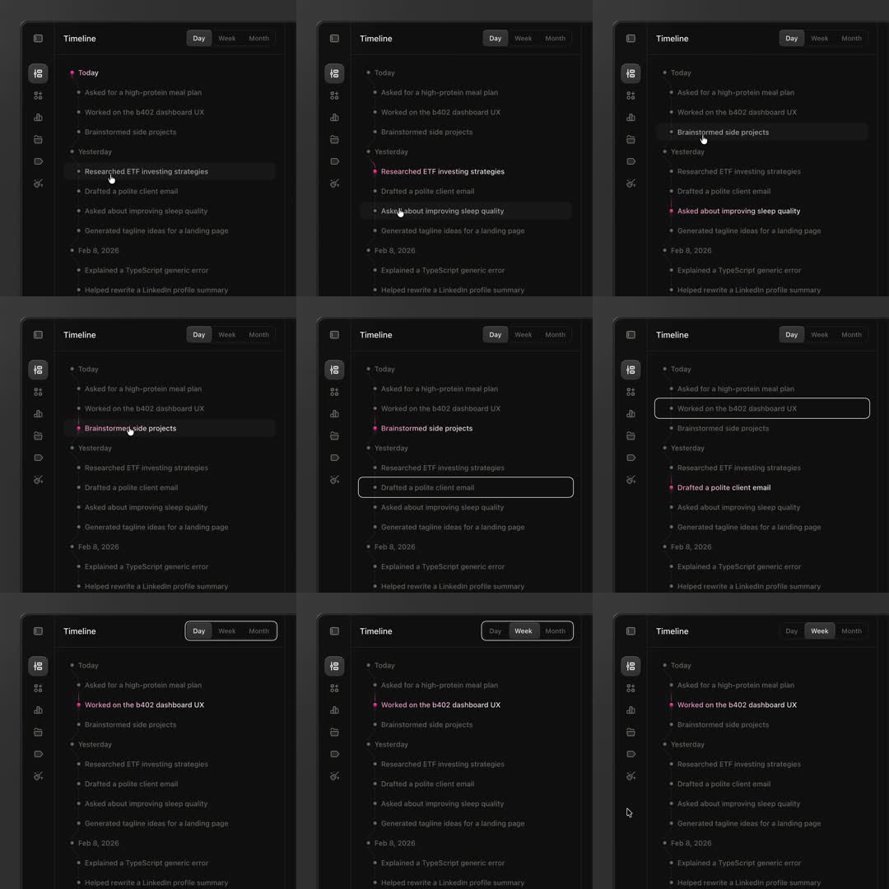

Timeline concept: a dark activity timeline ('Timeline' header, Day/Week/Month segmented control) listing AI-assistant activity grouped Today / Yesterday / Feb 8, 2026 - dot markers on a vertical rail ('Asked for a high-protein meal plan', 'Worked on the b402 dashboard UX'...); hover fills the row with a grey wash and turns the dot pink; keyboard/selection shows a white outline ring around the focused entry; the segmented control slides its knob Day -> Week.
Media
Frame-by-frame

0-25%
Idle: 'Today' group (pink dot) expanded, entries grey dots; one row hovered with grey wash + hand cursor.
25-50%
Hover moves down entries ('Brainstormed side projects', 'Asked about improving sleep quality'); rail line continuous; dots turn pink on hover.
50-75%
Focus state: 'Worked on the b402 dashboard UX' and 'Drafted a polite client email' get a white 1px outline ring (keyboard nav).
75-100%
Segmented control knob slides Day -> Week; list content stays (same entries); hover wash continues.
Build prompt
Rebuild this interaction 1:1: an activity timeline concept - dark timeline ("Timeline" header, Day/Week/Month segmented control) listing AI-assistant activity grouped Today / Yesterday / Feb 8, 2026: dot markers on a vertical rail ("Asked for a high-protein meal plan", "Worked on the b402 dashboard UX"...); hover fills the row with a grey wash and turns the dot pink; keyboard focus shows a white outline ring; the segmented control slides its knob Day -> Week.
## Integration
Integration: stack-agnostic spec - springs given as stiffness/damping, timed motions as duration + curve, canvas/shader notes are perf guidance only; map every value to your framework and animation library of choice.
## Scene
Dark card: "Timeline" header; Day/Week/Month segmented control; groups (Today with a pink marker, Yesterday, Feb 8 2026); entries with grey dots on a continuous vertical rail.
## Motion spec
Pattern: list micro-interactions.
- Row hover: grey wash fills the row (120ms ease-out); the row's dot turns pink; hand cursor.
- Keyboard focus: white 1px outline ring around the focused entry (instant).
- Segment switch: knob slides Day -> Week (250ms ease-out, layout animation); list content stays.
## Calibration
- Hover wash 120ms - immediate, no lag; this is a dense utility list.
- The pink dot appears on hover AND marks the Today group header - two meanings, one color system.
- Knob slide 250ms with the knob resizing to the label width.
## Reduced motion
All states apply instantly without transitions.
## Don't miss
- The rail is one continuous vertical line; dots sit ON it, not beside it.
- Hover wash spans the full row width, edge to edge.
- Focus ring is a crisp 1px white outline (keyboard only) - visually distinct from hover.
Mechanics
trigger
row hover, keyboard focus, segment switch
elements
timeline rail + dots, entry rows, segmented control, group headers